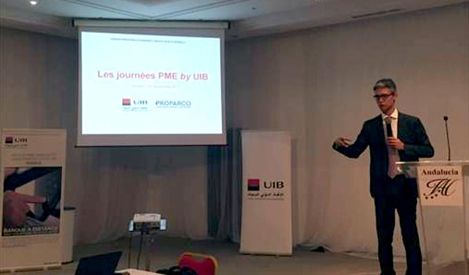

<div class="container-fluid">
  <div class="row">
    <div class="col-md-12">
      <div class="card">
        <div class="header">
          <h4 class="title">Actualités</h4>
          <p class="category">Les dernières actualités dans la bourse tunisienne</p>
        </div>
        <div class="content">
          <div class="row">
            <div class="col-md-12" *ngFor="let i of[1,2,3,4,5,6]">
              <div class="item-news horizental-flex">
                
                <div class="vertical-flex" style="margin-left: 10px;">
                  <h4 class="title">L’UIB et PROPARCO, partenaires des PME en Tunisie</h4>
                  <p class="category">
                    Résolument engagée dans la mise en œuvre de sa stratégie de croissance sur le marché des entreprises, l’Union Internationale de Banques (UIB) intensifie ses actions d’accompagnement de ses clients PME en organisant, en partenariat avec PROPARCO, les premières journées d’information et de formation financière et commerciale à destination des Petites et moyennes entreprises: «Les Journées PME by UIB».
                  </p>
                  <a href="#">Lire la suite</a>
                </div>
              </div>
            </div>
          </div>
        </div>
      </div>
    </div>
  </div>
</div>